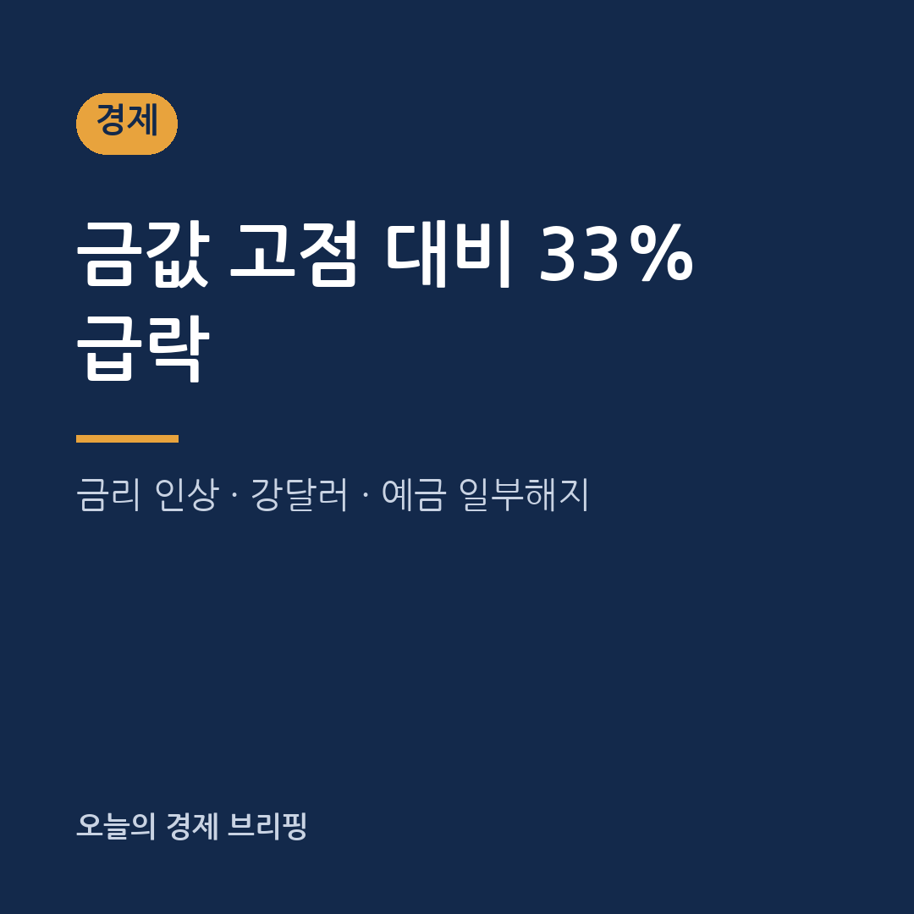
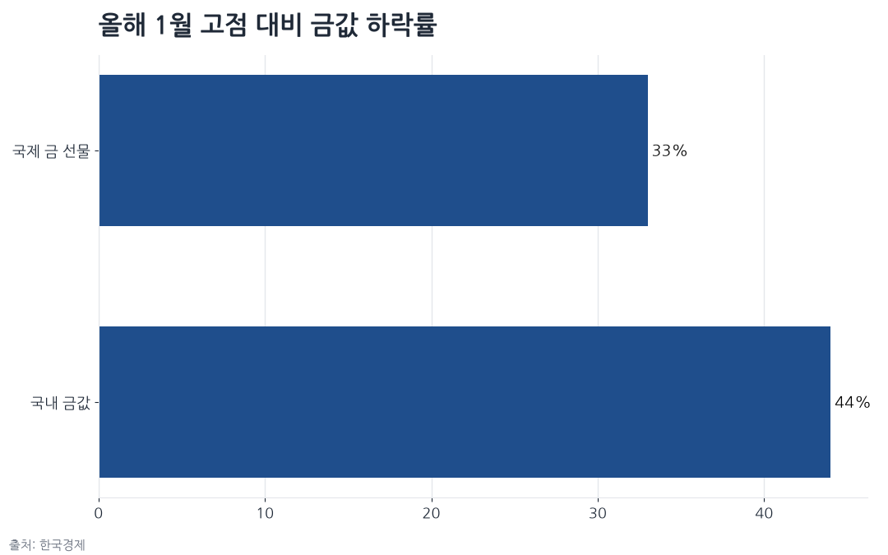

2026-11-28-1433-naver 발행 키트 · 이 페이지는 검색에 노출되지 않습니다.
제목
카테고리
경제태그
본문 (그림·표 포함)
휴대폰 블로그 앱에서는 그림이 같이 붙지 않을 수 있어요. 그때는 [글자만 복사] 후 아래 이미지를 저장해 [그래프1]·[표1] 자리에 첨부하세요.

"금은 불안할 때 사는 거"라고 들어오신 분들, 요즘 금값 보면 마음이 복잡하시죠. 오늘은 올해 금값이 어디까지 내려왔는지, 그리고 급하게 돈이 필요할 때 예금을 덜 손해 보고 쓰는 방법까지 같이 정리해 봤어요.
▶ 올해 1월 고점에서 3분의 1이 빠졌어요
보도에 따르면 뉴욕상품거래소(NYMEX)의 국제 금 선물은 1월 29일 온스당 5,318.4달러까지 올랐다가, 11월 20일에는 3,502.9달러까지 내려갔어요. 고점 대비 약 33% 하락이에요.
11월 24일에는 온스당 3,561.9달러 선에서 거래됐다고 해요. 조금 반등했지만 고점과는 아직 거리가 멀어요.
국제 금 선물 가격 흐름
| 시점 | 온스당 가격 |
|---|---|
| 1월 29일(고점) | 5,318.4달러 |
| 11월 20일 | 3,502.9달러 |
| 11월 24일 | 3,561.9달러 |
출처: 한국경제(NYMEX 기준)
▶ 국내 금값은 더 많이 빠졌어요
우리나라 금값은 1월 고점 대비 44% 내려왔다고 해요. 국제 가격보다 낙폭이 더 큰 거예요.
실제로 금을 사 두신 분이라면 체감 손실이 더 크게 느껴질 수 있는 숫자죠.

▶ 왜 이렇게 떨어졌을까요
기사가 꼽은 이유는 크게 두 가지예요. 하나는 세계 각국이 기준금리(중앙은행이 정하는 정책금리)를 올리는 흐름이고, 다른 하나는 달러 강세예요.
금은 이자가 나오지 않는 자산이에요. 그래서 예금이나 채권 금리가 오르면 상대적으로 매력이 떨어지거든요. 여기에 내년에도 주요국이 금리를 올릴 거란 전망까지 겹치면서 부담이 커졌다고 해요.
달러가 강해져도 달러로 값이 매겨지는 금은 다른 나라 투자자에게 비싸게 느껴져서 수요가 줄기 쉬워요.
▶ 안전자산이라고 안 떨어지는 건 아니에요
이번 흐름이 알려 주는 건, 안전자산이라는 말이 "절대 안 떨어진다"는 뜻은 아니라는 거예요. 금리와 환율 같은 환경이 바뀌면 금도 크게 움직여요.
이 글은 금을 사라, 팔라는 얘기가 아니에요. 다만 내 자산이 한쪽에 몰려 있진 않은지, 금리 방향에 얼마나 민감한지 점검해 보는 계기로 삼아 보세요.
▶ 급하게 돈이 필요할 땐 예금 일부해지
이자 얘기가 나온 김에 하나 더 짚어 볼게요. 매일경제 보도에 나온 사례예요. 연 3% 금리의 1년 만기 정기예금에 5,000만 원을 넣은 분이 가입 6개월 만에 급하게 500만 원이 필요해진 상황이에요.
예전엔 예금을 통째로 깨야 해서 이자 손해가 컸어요. 그런데 필요한 금액만 해지하는 일부해지 서비스를 쓰면 남은 잔액에는 처음 약속한 금리가 그대로 적용돼요.
예금 전체 해지와 일부해지
| 구분 | 전체 해지 | 일부해지 |
|---|---|---|
| 해지하는 금액 | 예금 전액 | 필요한 금액만 |
| 남는 잔액 | 없음 | 가입 때 금리가 그대로 적용 |
| 사례 | 5,000만 원 중 500만 원만 필요해도 전액 해지 | 500만 원만 해지하고 4,500만 원은 유지 |
출처: 매일경제
▶ 쓰기 전에 확인할 점
일부해지는 상품과 금융사마다 가능 여부와 조건이 다를 수 있어요. 가입한 은행 앱이나 창구에서 내 상품이 되는지 먼저 물어보세요.
생활자금이 필요할 때 예금 전체를 깨기 전에 이 방법부터 떠올려 보시면 좋아요.
오늘 한 줄 정리, 금은 금리와 달러 앞에서 33% 빠졌고, 급전이 필요하면 예금은 필요한 만큼만 해지하세요.
여러분은 금이나 예금 중에 어디에 더 마음이 가세요? 댓글로 생각 나눠 주세요.
이미지 (개별 복사·저장)
출처 (본문 맨 아래에 붙여넣기 권장)
- 한국경제, '안전자산' 금의 배신…금리 인상 공포에 고점 대비 33% 급락, https://www.hankyung.com/article/202611262188i - 매일경제, “눈물 머금고 예금 깼는데 괜히 머금었습니다”…이자 손해 줄이는 방법, https://www.mk.co.kr/news/economy/12220684